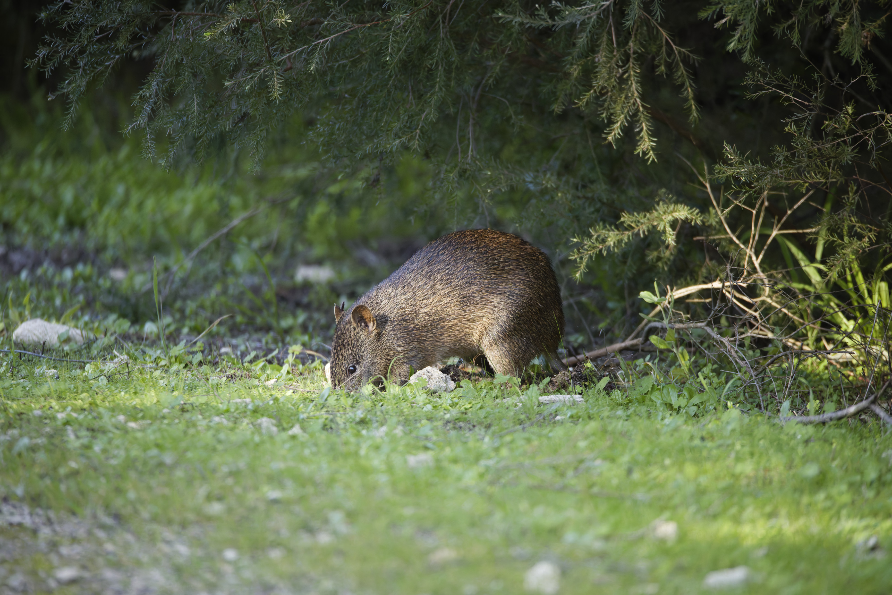

Len Howard Conservation Park


While driving to Halls Head near Mandurah to pick up something I had bought on marketplace, I decided to bring my camera and 150-600mm to see if I could capture any interesting coastal birds top make the drive down a bit more worth the effort.
After picking up my item from a very friendly older guy I did a quick google and found the Len Howard Conservation Park, complete with bird hide, just five minutes away. After leaving my car on the side of the road (I didn’t see the carpark 200m down the road) I wandered into the small area of bushland and found the hide, and also a Quenda digging on the side of the path.

I sat for about 15 minutes, capturing a Great Egret and Pelican nearby as well as many Cormorants and Gulls flying past. Then I wandered a bit further down the path to see if there was any more interesting angles of the areas with more birds without much luck. I also bumped into another photographer complete with camouflage vest and had a quick chat about the birds in the area before heading back to the car to get home in time to walk Athena and start dinner.